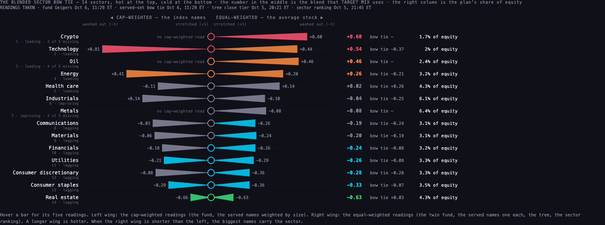

SG1 · the sector gauge — each sector against its own normal, coloured by where it stands against the market
One number per sector cannot tell a leader from a laggard, because each sector has its own normal. This study adds two things to the allocation's 3a reading: where today sits in that sector's own last 12 months (a percentile, never a universal threshold), and which of four boxes the sector is in against the market (leading, weakening, lagging, improving — the standard Relative Rotation Graph). Today, only Technology is hot for itself; Health care, Metals, Real estate are cold for themselves. Health care and Consumer staples are equally cold against their own year, but Health care is still ahead of the market and Staples is behind it — the case you described on 26 Sep.
Tuesday 6 Oct 2026, built 06 Oct 2026 11:46 ET · a study, not a product change · nothing deployed, no table written, no page of the Hub changed · the allocation tool's 3a readings were read from the live page at the time above; the fund Geigers from the chart API at 15:29 UTC; the weekly closes are settled through the week ending 2026-09-27 (this week is still forming and is left out).
1 · The pictures — the gauge beside today's allocation 3a
Left: the gauge. Each sector's dot is where today's fund Geiger sits in that sector's own last 12 months of evening readings; the colour and letter are its RRG box against SPY. Right: the allocation tool's 3a as it stands this morning, read live and headless — one blended number per sector on one shared scale, hottest at the top. The two orders differ, and that difference is the point.
L leadingW weakeningG laggingI improving

allocation.scintillahub.ai · 3a THE BLENDED SECTOR BOW TIE · read headless at 1680 wide, 06 Oct 2026 11:46 ET. Crypto, Technology and Oil at the top; Real estate at the bottom.
2 · The Relative Rotation Graph — leader or laggard against the market
The standard open-source picture of sector rotation. Across is strength relative to SPY (JdK RS-Ratio), up is whether that strength is growing (JdK RS-Momentum); both centred on 100. A sector turns clockwise through the four boxes over months. This week: leading — Technology, Oil; weakening — Health care, Energy, Crypto; lagging — Financials, Consumer discretionary, Industrials, Materials, Consumer staples, Communications, Metals; improving — Utilities, Real estate. SMH (Semiconductors) is drawn for the worked check; it is not one of the bow tie's 14.
Weekly closes from the chart API (Massive for the funds and SPY; the chart API's own crypto / futures feed for BTCUSD, GCUSD, CLUSD) · RS = 100 × close ÷ SPY close, smoothed by a 4-week mean · RS-Ratio = 100 + z-score of RS over 14 weeks · RS-Momentum = 100 + z-score of the 4-week change in RS-Ratio over 14 weeks · tails are the last 5 weeks · the implementation followed is milesfai/rrg-kit (rrg.py, weekly settings: window 14, momentum_period 4, smooth 4), which calls this "the standard public approximation" — JdK's own formula is proprietary. No FMP fill was needed: every symbol's weekly series was complete on the chart API.
3 · The table — sector · own-history percentile · RRG box · the gauge
Sorted hot-for-itself to cold-for-itself. "Fund Geiger today" is the cap-weighted sector fund's live Geiger composite (the one 3a input that has a history). "Own 12-month percentile" is the share of that fund's last 12 months of evening readings that sit below today's. "Coverage" says how many evenings the percentile rests on. The gauge's words: hot for itself (80th percentile or above), cold for itself (20th or below), inside its normal (between).
| SECTOR | FUND | 3a BLEND | FUND GEIGER | OWN 12-MO PCTL | 12-MO MEDIAN | OWN ALL PCTL | COVERAGE | RS-RATIO | RS-MOM | RRG BOX | THE GAUGE |
|---|---|---|---|---|---|---|---|---|---|---|---|
| Technology | XLK | +0.54 | +0.927 | 94th | +0.380 | 96th | 251 · 498 since 2024-10 | 102.07 | 102.38 | L leading | hot for itself leader running hot for itself |
| Crypto | BTCUSD | +0.60 | +0.710 | 73rd | +0.396 | 73rd | 42 · 42 since 2026-08 | 101.75 | 98.39 | W weakening | inside its normal nothing unusual against its own normal |
| Energy | XLE | +0.26 | +0.452 | 57th | +0.349 | 66th | 251 · 492 since 2024-10 | 101.10 | 98.18 | W weakening | inside its normal nothing unusual against its own normal |
| Consumer discretionary | XLY | -0.28 | -0.147 | 38th | +0.013 | 27th | 251 · 536 since 2024-08 | 97.84 | 99.23 | G lagging | inside its normal nothing unusual against its own normal |
| Utilities | XLU | -0.26 | -0.195 | 37th | -0.016 | 27th | 251 · 515 since 2024-09 | 98.28 | 100.32 | I improving | inside its normal nothing unusual against its own normal |
| Communications | XLC | -0.19 | -0.119 | 35th | +0.076 | 23rd | 251 · 536 since 2024-08 | 99.46 | 98.89 | G lagging | inside its normal nothing unusual against its own normal |
| Materials | XLB | -0.20 | -0.085 | 35th | +0.175 | 34th | 251 · 536 since 2024-08 | 97.44 | 98.03 | G lagging | inside its normal nothing unusual against its own normal |
| Industrials | XLI | -0.04 | +0.062 | 33rd | +0.364 | 32nd | 251 · 536 since 2024-08 | 98.16 | 99.94 | G lagging | inside its normal nothing unusual against its own normal |
| Oil | CLUSD | +0.46 | +0.506 | 32nd | +0.571 | 32nd | 42 · 42 since 2026-08 | 101.61 | 100.40 | L leading | inside its normal nothing unusual against its own normal |
| Financials | XLF | -0.24 | -0.195 | 31st | +0.133 | 22nd | 251 · 489 since 2024-10 | 97.72 | 97.90 | G lagging | inside its normal nothing unusual against its own normal |
| Consumer staples | XLP | -0.33 | -0.338 | 21st | +0.043 | 22nd | 251 · 534 since 2024-08 | 97.84 | 99.87 | G lagging | inside its normal laggard that is simply low — low for itself and behind the market |
| Health care | XLV | +0.02 | -0.155 | 20th | +0.300 | 32nd | 251 · 520 since 2024-09 | 100.18 | 98.40 | W weakening | cold for itself leader on a pullback — its own low, still leading the market |
| Metals | GCUSD | -0.08 | +0.085 | 8th | +0.512 | 8th | 42 · 42 since 2026-08 | 99.83 | 97.86 | G lagging | cold for itself laggard that is simply low — low for itself and behind the market |
| Real estate | XLRE | -0.63 | -0.715 | 4th | +0.048 | 3rd | 251 · 536 since 2024-08 | 97.87 | 100.21 | I improving | cold for itself laggard that is simply low — low for itself and behind the market |
The equal-weight twins — the average stock in each sector
The same two readings for the equal-weighted fund of each sector (the right wing of the bow tie). The boxes agree with the cap-weighted funds in every sector this week.
| SECTOR | EQUAL-WEIGHT TWIN | TWIN GEIGER TODAY | OWN 12-MONTH PERCENTILE | 12-MONTH MEDIAN | COVERAGE | RS-RATIO | RS-MOMENTUM | RRG BOX | CAP-WEIGHT BOX (ABOVE) |
|---|---|---|---|---|---|---|---|---|---|
| Technology | RSPT | +0.917 | 94th | +0.451 | 251 · 536 on record | 101.87 | 101.61 | L leading | leading |
| Energy | RSPG | +0.353 | 48th | +0.374 | 251 · 536 on record | 100.90 | 97.77 | W weakening | weakening |
| Consumer discretionary | RSPD | -0.531 | 16th | +0.008 | 251 · 536 on record | 97.67 | 99.41 | G lagging | lagging |
| Utilities | RSPU | -0.301 | 30th | +0.042 | 251 · 536 on record | 98.31 | 100.35 | I improving | improving |
| Communications | RSPC | -0.509 | 24th | -0.189 | 251 · 563 on record | 97.46 | 97.16 | G lagging | lagging |
| Materials | RSPM | -0.239 | 25th | +0.222 | 251 · 536 on record | 97.24 | 97.97 | G lagging | lagging |
| Industrials | RSPN | -0.232 | 22nd | +0.349 | 251 · 536 on record | 98.04 | 99.90 | G lagging | lagging |
| Financials | RSPF | -0.299 | 22nd | +0.072 | 251 · 539 on record | 97.81 | 98.03 | G lagging | lagging |
| Consumer staples | RSPS | -0.539 | 14th | +0.008 | 251 · 536 on record | 97.42 | 98.70 | G lagging | lagging |
| Health care | RSPH | +0.459 | 54th | +0.403 | 251 · 536 on record | 100.87 | 98.65 | W weakening | weakening |
| Real estate | RSPR | -0.820 | 1st | +0.022 | 251 · 540 on record | 97.96 | 100.31 | I improving | improving |
4 · Worked check on today — every number shown
Four pairs. For each sector: today's reading, the shape of its own last 12 months (lowest, 10th, median, 90th, highest), how much of the year it spent above +0.20 and below −0.20, the percentile that follows, and the RRG arithmetic from the weekly closes.
Semiconductors against Industrials — the pair you named
Semiconductors (SMH — not on the bow tie)
reading today +0.825 · not on the bow tie
its own last 12 months: lowest -0.649 · 10th -0.240 · median +0.485 · 90th +0.899 · highest +1.000 (251 evenings)
time spent above +0.20 ("overbought" in the allocation's words): 67% of the year · below −0.20: 12%
so today is at its 81st percentile — hot for itself
against the market: RS = 100 × 630.6 ÷ 769.64 = 81.93 (4-week mean 77.55) → RS-Ratio 100.29, RS-Momentum 102.13 → L leading
Industrials (XLI)
reading today +0.062 · 3a blend -0.04
its own last 12 months: lowest -0.699 · 10th -0.360 · median +0.364 · 90th +0.811 · highest +0.986 (251 evenings)
time spent above +0.20 ("overbought" in the allocation's words): 61% of the year · below −0.20: 19%
so today is at its 33rd percentile — inside its normal
against the market: RS = 100 × 169.95 ÷ 769.64 = 22.08 (4-week mean 22.25) → RS-Ratio 98.16, RS-Momentum 99.94 → G lagging
Semiconductors read +0.825 and Industrials +0.062: on one universal scale semis look far hotter. But semis spent 67% of the year above +0.20 with a median of +0.485, Industrials 61% with a median of +0.364. Against its own year, semis sit at the 81st percentile and Industrials at the 33rd. Semis run hot by nature and are hot for themselves today; Industrials are not oversold — they are simply in the lower-middle of their own normal, while lagging the market. That is "hot because it always runs hot" (part of it) and "hot for itself" (the rest), shown apart.
Technology against Energy — two positive readings, two different stories
Technology (XLK)
reading today +0.927 · 3a blend +0.54
its own last 12 months: lowest -0.823 · 10th -0.367 · median +0.380 · 90th +0.862 · highest +1.000 (251 evenings)
time spent above +0.20 ("overbought" in the allocation's words): 58% of the year · below −0.20: 18%
so today is at its 94th percentile — hot for itself
against the market: RS = 100 × 199.81 ÷ 769.64 = 25.96 (4-week mean 25.21) → RS-Ratio 102.07, RS-Momentum 102.38 → L leading
Energy (XLE)
reading today +0.452 · 3a blend +0.26
its own last 12 months: lowest -0.685 · 10th -0.278 · median +0.349 · 90th +0.845 · highest +0.977 (251 evenings)
time spent above +0.20 ("overbought" in the allocation's words): 59% of the year · below −0.20: 16%
so today is at its 57th percentile — inside its normal
against the market: RS = 100 × 62.82 ÷ 769.64 = 8.16 (4-week mean 8.29) → RS-Ratio 101.10, RS-Momentum 98.18 → W weakening
Both read positive. Technology at +0.927 is at its 94th percentile and leading the market: hot for itself and a leader. Energy at +0.452 is only at its 57th percentile (its median is +0.349) and its RS-Momentum has dropped below 100: inside its own normal, and weakening against the market. The allocation's 3a ranks both "leading" and "overbought"; the gauge says only one of them is stretched.
Health care against Consumer staples — both cold for themselves, only one is a laggard
Health care (XLV)
reading today -0.155 · 3a blend +0.02
its own last 12 months: lowest -0.762 · 10th -0.365 · median +0.300 · 90th +0.756 · highest +0.963 (251 evenings)
time spent above +0.20 ("overbought" in the allocation's words): 59% of the year · below −0.20: 17%
so today is at its 20th percentile — cold for itself
against the market: RS = 100 × 166.18 ÷ 769.64 = 21.59 (4-week mean 21.87) → RS-Ratio 100.18, RS-Momentum 98.40 → W weakening
Consumer staples (XLP)
reading today -0.338 · 3a blend -0.33
its own last 12 months: lowest -0.785 · 10th -0.479 · median +0.043 · 90th +0.706 · highest +0.894 (251 evenings)
time spent above +0.20 ("overbought" in the allocation's words): 41% of the year · below −0.20: 31%
so today is at its 21st percentile — inside its normal
against the market: RS = 100 × 80.53 ÷ 769.64 = 10.46 (4-week mean 10.72) → RS-Ratio 97.84, RS-Momentum 99.87 → G lagging
Health care is at its 20th percentile, Staples at its 21st: almost the same coldness against their own year. But Health care's RS-Ratio is still above 100 (100.18, weakening box) — a sector that has been beating the market and has pulled back against its own normal. Staples' RS-Ratio is 97.84, in the lagging box: low for itself and behind the market. This is your 26 Sep case — a pullback on a leader against a laggard that is simply low — and the 3a reading alone cannot tell them apart (+0.02 against −0.33 says Health care is "hotter", nothing more).
Real estate against Metals — the two coldest for themselves
Real estate (XLRE)
reading today -0.715 · 3a blend -0.63
its own last 12 months: lowest -0.798 · 10th -0.571 · median +0.048 · 90th +0.654 · highest +0.831 (251 evenings)
time spent above +0.20 ("overbought" in the allocation's words): 41% of the year · below −0.20: 35%
so today is at its 4th percentile — cold for itself
against the market: RS = 100 × 40.81 ÷ 769.64 = 5.30 (4-week mean 5.49) → RS-Ratio 97.87, RS-Momentum 100.21 → I improving
Metals (GCUSD)
reading today +0.085 · 3a blend -0.08
its own last 12 months: lowest -0.005 · 10th +0.146 · median +0.512 · 90th +0.757 · highest +0.802 (42 evenings)
time spent above +0.20 ("overbought" in the allocation's words): 81% of the year · below −0.20: 0%
so today is at its 8th percentile — cold for itself
against the market: RS = 100 × 4162.3 ÷ 769.64 = 540.81 (4-week mean 564.70) → RS-Ratio 99.83, RS-Momentum 97.86 → G lagging
Real estate reads -0.715, its 4th percentile: deep oversold for itself. Its RS-Momentum has turned above 100 (improving box) while RS-Ratio is still below: a laggard beginning to turn. Metals read +0.085, which on the universal scale is "neutral" — yet that is its 8th percentile: gold spent 81% of its (short, 42-evening) record above +0.20 and never below −0.20, so a near-zero reading is cold for gold. Metals is also in the lagging box this week. A neutral number that is cold for itself: the clearest case for the gauge over the raw reading.
5 · Naming the two cases
- A leader pulled back against its own normal — RS-Ratio above 100 (leading or weakening box) and own-history percentile at or below the 30th. Today: Health care (20th percentile, weakening). On 26 Sep you said "a 5% pullback on a leader is better than a 30% pullback in a laggard"; this is the mark that finds the first half of that sentence.
- A laggard that is simply low — RS-Ratio below 100 (lagging or improving box) and own-history percentile at or below the 30th. Today: Consumer staples (21st, lagging), Real estate (4th, improving — the momentum has turned, the ratio has not), Metals (8th, lagging).
- A leader running hot for itself — at or above the 80th percentile and ahead of the market. Today: Technology (94th), and Semiconductors (81st) outside the bow tie.
- Everything else is inside its own normal, whatever its raw number says. Energy at +0.45 and Oil at +0.51 are not stretched for themselves.
6 · Where each number comes from
- The 3a blend: read from the live allocation page's own table (its
blendTable()) in a headless browser at 06 Oct 2026 11:46 ET. Five readings per sector averaged; Crypto, Metals and Oil carry 3 or 4 of 5 missing (named on the page). - The fund Geiger today: the chart API's
/geiger, computed 15:29:31 UTC, the same number the Hub's board and the allocation's "State Street fund" dial read. - The fund Geiger's own history: the brief named the H11 composite history. That table (
composite_history) holds, for the sector funds, only 11 distinct evenings in 40 rows — the rest are the 24 Aug reading carried forward, as H11 found — and one evening for the equal-weight twins. So the history was rebuilt the way G2 did on 5 Oct: the publisher's own rung maths (nine moving averages for trend, RSI and Williams %R for momentum, seven rungs 3h · 4h · 6h · 12h · 1d · 3d · 1w with the saved Equalizer's weights) replayed on the chart API's bars, one reading per name per session. The rebuilt reading for 5 Oct agrees with the stamped live row H11's dry run wrote that night: XLK +0.9171 rebuilt against +0.9167 stored; XLRE -0.7286 against -0.7283. - Coverage: the intraday rungs limit how far back a full seven-rung reading can be rebuilt — about two years (from Aug–Oct 2024) for every fund. The 12-month percentile rests on 251 evenings per fund. A 3-year percentile could not be built; the "all history" column is the ≈2 years that exist. For Crypto (BTCUSD), Metals (GCUSD) and Oil (CLUSD) the chart API's bars are not Massive's and the rung replay was not run; their percentile rests only on the 42 real nightly rows in
composite_history(9 Aug – 5 Oct), and their "today" is last night's row, because these three are not in the chart API's Geiger. - The weekly closes: the chart API's
/candles,tf=W, provider-built, split-adjusted, with the forming week dropped by the API itself. 220 weeks were available for every fund (174 for the newer equal-weight twins), far more than the 14 + 4 + 8 needed.
7 · What could be wrong
- The percentile is of the fund's Geiger, not of the five-reading blend: the tree, the sector ranking and the served-set bow tie have no history to take a percentile of. When a sector's blend differs from its fund (Health care: +0.02 blend, −0.16 fund), the percentile describes the fund.
- Two years of history is one market: a rise with one sharp fall (spring 2025). A sector's "normal" measured over a longer stretch could sit differently.
- Crypto, Metals and Oil rest on 42 evenings. Gold's "never below −0.20" is a fact about those 42 evenings only.
- The RRG is the public approximation, not JdK's formula; the boxes near the 100 lines (Health care at 100.18, Industrials at 98.16 / 99.94, Metals at 99.83) can change box in a week.
- The thresholds for the gauge's words (20th / 80th) and for the named cases (30th / 80th) are this study's choice, set so the worked pairs read clearly; they are percentiles of each sector's own history, never levels of the reading itself.
8 · What was not done
- No change to the allocation tool, the Hub or any page; this is a study on a branch.
- No 3-year percentile (history does not exist in a form that can be read; see 6).
- The rung replay was not run for BTCUSD, GCUSD, CLUSD.
- No test of whether the gauge predicts anything; G2 on 5 Oct found the Geiger alone does not lead price.
PAGE SPECS
Sources. Chart API https://scintilla-massive-chart-api.fly.dev: /geiger (today's composites), /candles?tf=D|180|240|6h|12h (the rung replay), /candles?tf=W (the RRG). Supabase project wadinxqplrggagkvrdag, read-only SQL: composite_history (coverage count; the 42 real rows for BTCUSD, GCUSD, CLUSD; the 5 Oct stamped rows for the check). The live allocation page for the 3a blend. No key was used from this machine; nothing was written.
Own-history percentile. share of evenings strictly below today plus half of those equal. 12 months = evenings on or after the same date one year before the last reading (251 per fund). The rung replay is tools/recon_g2.py (G2's, unchanged) driven by tools/rebuild.py; the publisher maths it mirrors is services/hot-query/geiger-rung-math.mjs on the provider line.
RRG. tools/compute.py: RS = 100 × close ÷ SPY close (weekly, settled bars only); RS smoothed by a 4-week mean; RS-Ratio = 100 + (RS − mean₁₄) ÷ sd₁₄ (population sd); RS-Momentum = 100 + z₁₄ of (RS-Ratio − RS-Ratio four weeks earlier); box by the sign of each against 100. Followed from milesfai/rrg-kit rrg.py and config.py ("weekly": window 14, momentum_period 4, smooth 4, tail 12); this page draws 8 weeks of tail so the dots stay readable.
Gauge. mark = own 12-month percentile of the cap-weighted fund's Geiger; colour = that fund's RRG box. Words: ≥ 80th hot for itself, ≤ 20th cold for itself. Cases: leader pulled back = box leading/weakening and ≤ 30th; laggard simply low = box lagging/improving and ≤ 30th; leader running hot = leading/weakening and ≥ 80th.
Colours. Four box colours (#199e70 leading, #c98500 weakening, #d55181 lagging, #3987e5 improving) checked with the data-viz palette validator on this page's panel (#121216): lightness band, chroma, colour-blind separation and contrast all pass; every mark also carries its letter, so colour is never alone. The rest of the page is the Hub's greys.
Files. data/results.json (every number on the page), data/alloc3a.json (the live 3a read), data/recon/*.json (rebuilt daily readings per fund), tools/ (download, replay, compute, build, shots), shots/ (headless pictures at 1680 and 390).